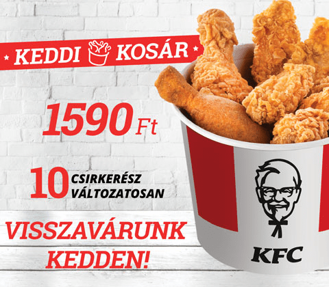
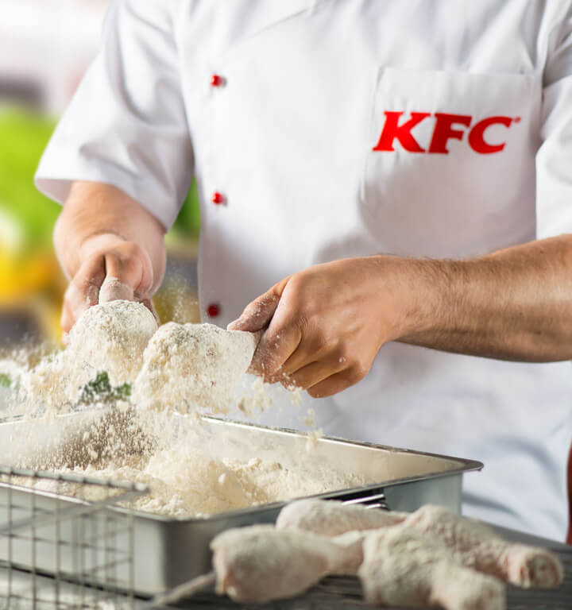
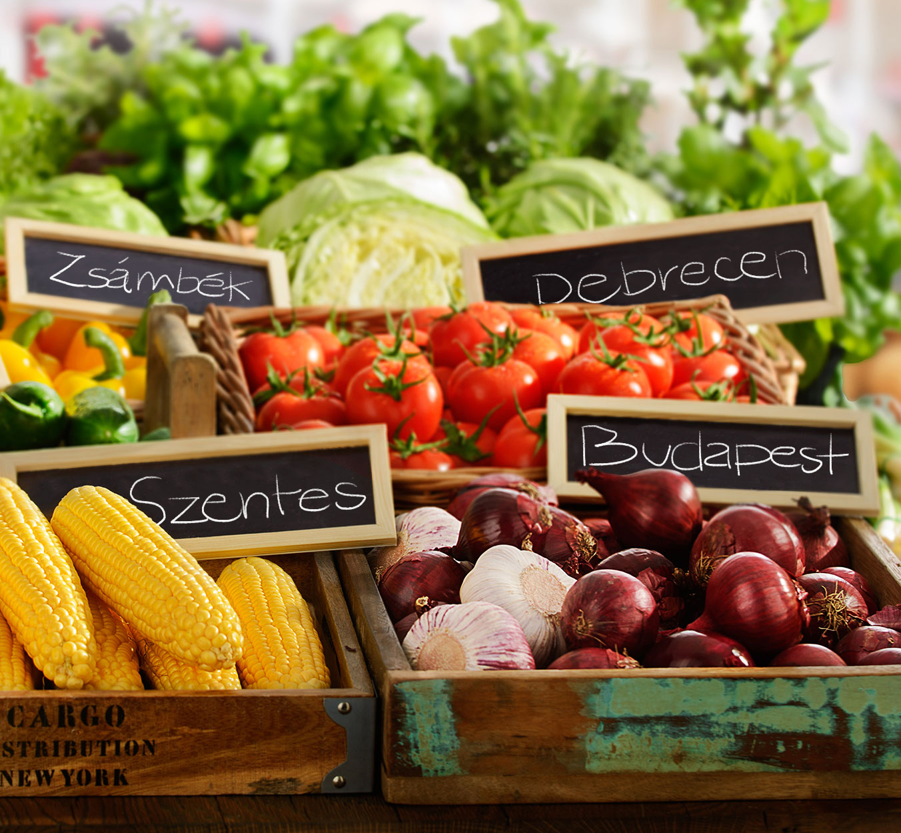

A kfc csirke
A finom étel titka az elkészítés módjában rejlik. Minden lépés fontos. Ezért csinálunk mindent saját magunk, itt a KFC-ben. A csirkehúst minden nap kézzel készítjük el: pácoljuk, grillezzük vagy panírozzuk és megsütjük. Csak a közvetlenül a felszolgálás előtt készült étel ilyen finom!
kfc minösége
- A legjobb helyi szállítóktól vásárolunk zöldséget, pékárut és csirkehúst.
- Biztos lehetsz benne, hogy magyar csirke kerül a tálcádra olyan partnerektől, akik teljes bizalmunkat élvezik és hosszú ideje dolgoznak velünk.
- A legjobbat akarjuk, ezért kiváló, frissességet és minőséget szem előtt tartó vállalkozásokkal építünk kapcsolatot.
